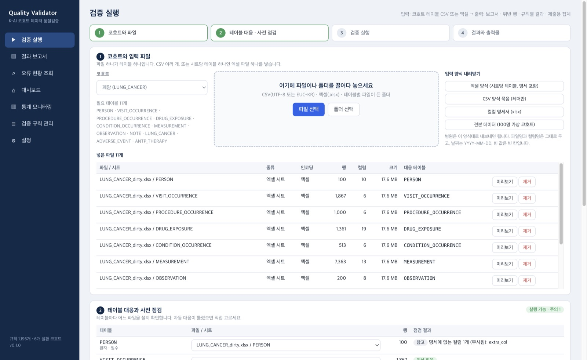
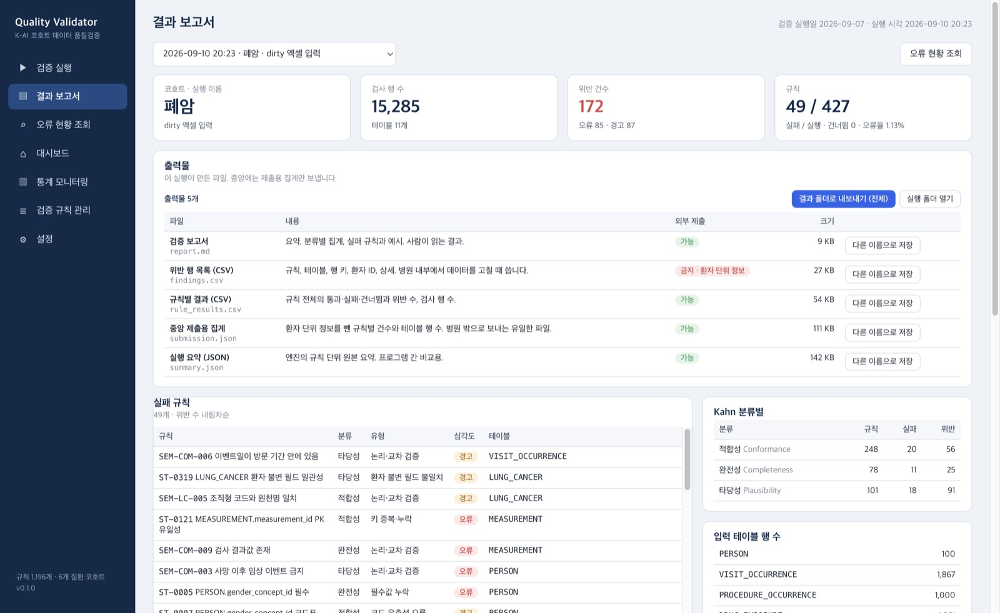
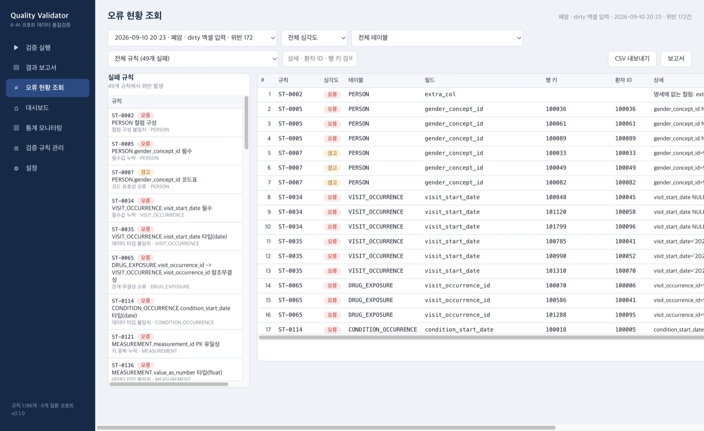

CSV · 엑셀 · 폴더 입력
CSV 여러 개, 시트당 테이블 하나인 엑셀 한 파일, 또는 파일이 든 폴더를 끌어다 놓습니다. EUC-KR 은 자동 변환하고 엑셀 날짜 셀은 YYYY-MM-DD 로 바꿉니다.
Windows · macOS · 오프라인 · Apache-2.0
폐암·유방암·대장암·대사이상지방간·당뇨병·림프종 6개 K-AI 코호트의 테이블 파일을 넣고 실행하면, 명세 적합성·완전성·타당성 규칙 1,196개를 검사해 보고서와 중앙 제출용 집계를 만듭니다. 병원 DB 에 접속하지 않고 네트워크 통신도 없습니다.
기능
병원 담당자가 DB 권한 없이 내보낸 파일만으로 제출 전 자가 점검을 마칠 수 있도록 만들었습니다.
CSV 여러 개, 시트당 테이블 하나인 엑셀 한 파일, 또는 파일이 든 폴더를 끌어다 놓습니다. EUC-KR 은 자동 변환하고 엑셀 날짜 셀은 YYYY-MM-DD 로 바꿉니다.
파일·시트 이름이 테이블 이름과 달라도 이름 포함 여부와 헤더 유사도(명세 컬럼 60% 이상)로 대응하고, 틀리면 대응표에서 직접 고릅니다.
기본키·person_id 누락은 오류로 실행을 막고, 명세와 다른 컬럼과 날짜 형식 표본은 주의로 알려 줍니다. 실행 후에 헤매지 않도록 먼저 잡습니다.
적합성(형식·코드·관계), 완전성(필수값·기준일), 타당성(범위·논리)으로 분류합니다. 구조 규칙은 명세에서 자동 생성되고, 교차 테이블 규칙은 DuckDB SQL 로 실행됩니다.
사망 이후 이벤트, 이벤트일이 방문 기간 밖, 약물 종료일 계산, TNM 조합, 방사선 총선량, FIB-4 재계산, Deauville 와 대사 반응처럼 테이블을 넘나드는 75개 규칙을 질환별로 실행합니다.
보고서, 위반 행 목록, 규칙별 결과, 실행 요약, 그리고 중앙 제출용 집계. 환자 단위 정보가 든 위반 행 목록은 병원 안에서만 쓰고, 중앙에는 집계 파일 하나만 보냅니다.
위반 행을 규칙·테이블·심각도·검색어로 걸러 보고 CSV 로 내보냅니다. 행 키와 환자 ID, 상세 설명이 있어 원천 데이터에서 바로 찾아 고칩니다.
오류 유형별 통계, 질환별 최신 결과와 오류율 신호등, 실행 이력 추이를 봅니다. 데이터를 고치고 다시 실행하면 위반 건수 변화가 추이로 남습니다.
앱의 TypeScript 엔진은 Python 참조 구현과 12회 실행에서 규칙 단위 결과와 위반 행이 바이트 단위로 일치하며, 회귀 시험이 이를 고정합니다. 가상데이터에서 오탐 0, 주입 오류 622건 전부 검출.
사용 흐름
코호트를 고르고 파일이나 폴더를 넣습니다. 입력 양식과 견본 데이터는 앱에서 내려받습니다.
자동 대응표를 확인하고, 오류가 있으면 먼저 해결합니다. 미리보기로 앞부분 몇 줄을 봅니다.
진행률이 표시되고 화면은 계속 쓸 수 있습니다. 질환당 100명 규모는 수 초, 큰 데이터는 수 분.
요약을 보고 다섯 파일을 열거나 결과 폴더로 내보냅니다. 중앙에는 submission.json 만 보냅니다.
화면
아래는 100명 가상 코호트로 자동 실행한 캡처입니다. 실제 환자 데이터는 개발 과정 어디에도 쓰이지 않았습니다.



로컬 데스크톱 앱입니다. 내보낸 파일만 읽고 결과를 사용자 컴퓨터에 저장할 뿐, 검증에 어떤 서버나 클라우드도 필요하지 않습니다. 중앙에 보내는 파일은 규칙별 건수와 테이블 행 수만 담은 집계 하나입니다.
다운로드
운영체제와 아키텍처에 맞는 파일을 받으세요. 명세와 검증 규칙, 견본 데이터가 설치 파일에 들어 있어 따로 받을 것이 없습니다.
Intel · AMD 64비트 Windows 10/11. 병원 업무용 PC 는 대부분 여기에 해당합니다.
Snapdragon 등 ARM 기반 Windows 11. Surface Pro X · Copilot+ PC.
M1 이후 Mac. Developer ID 서명과 Apple 공증을 거쳐 경고 없이 열립니다.
Windows 설치 파일은 GlobalSign EV 인증서로, macOS 는 Apple Developer ID 로 서명하고 공증했습니다. 32비트 Windows 와 Intel Mac 은 제공하지 않습니다.
SHA256SUMS.txt 로 파일을 대조할 수 있습니다. · 모든 릴리스 보기